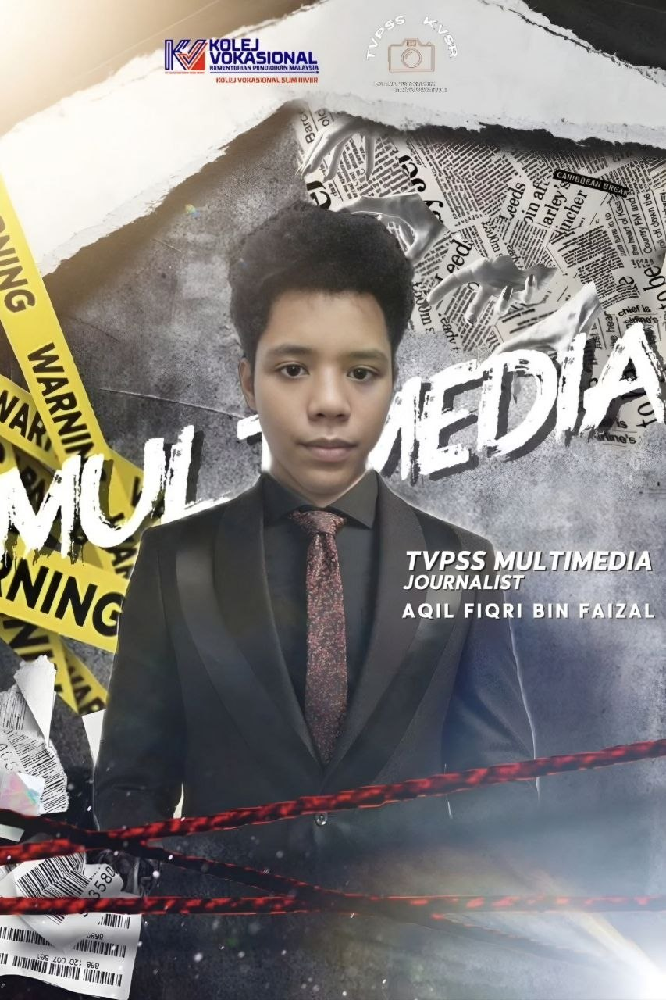
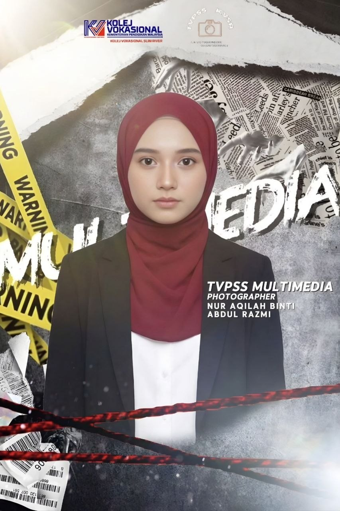
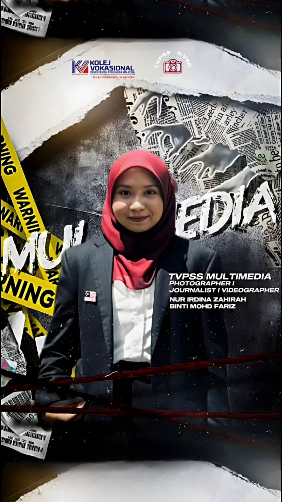
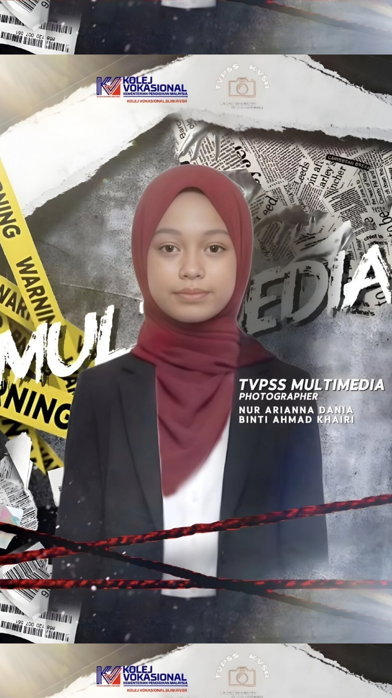
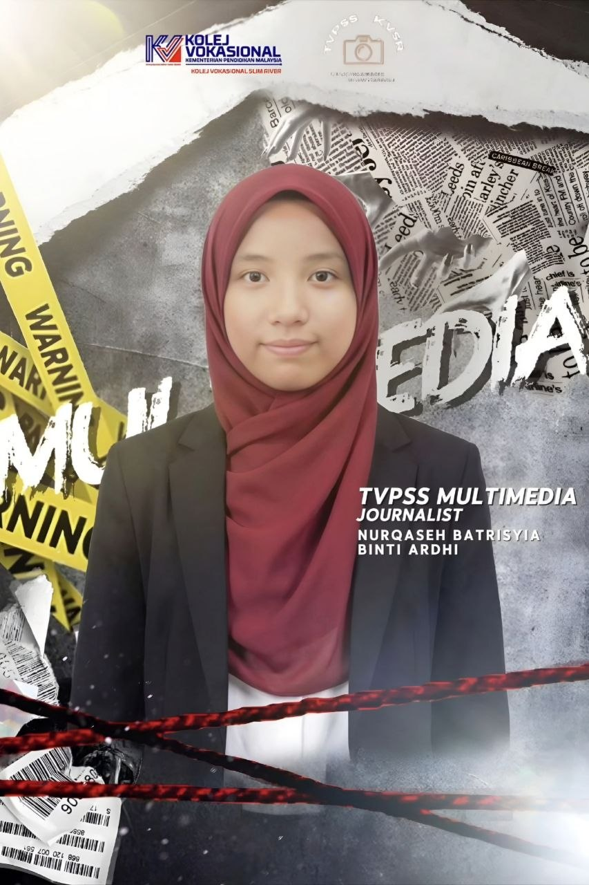
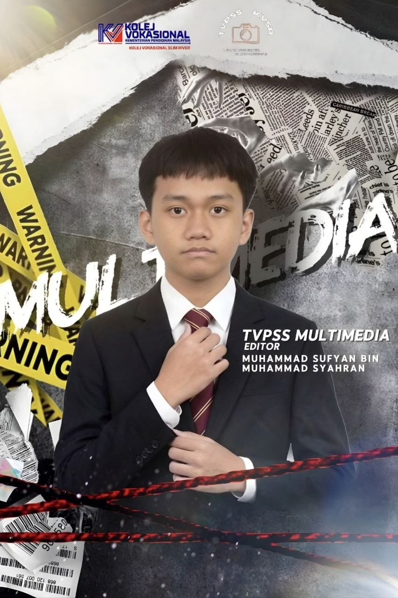
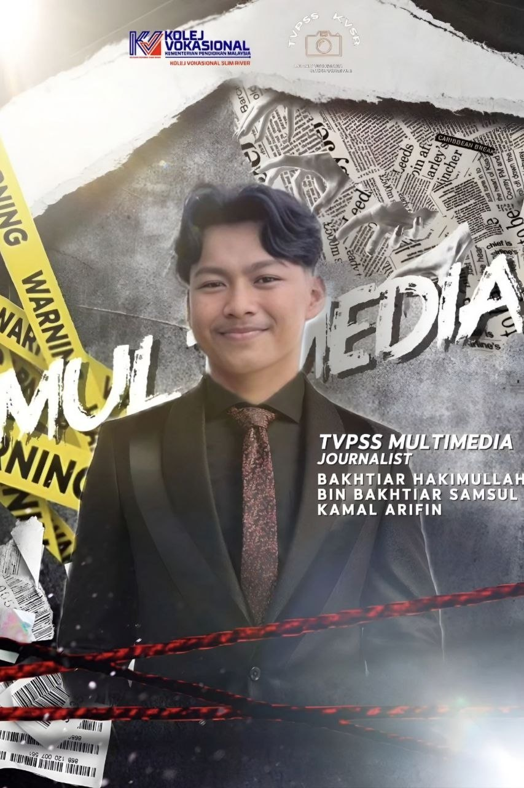
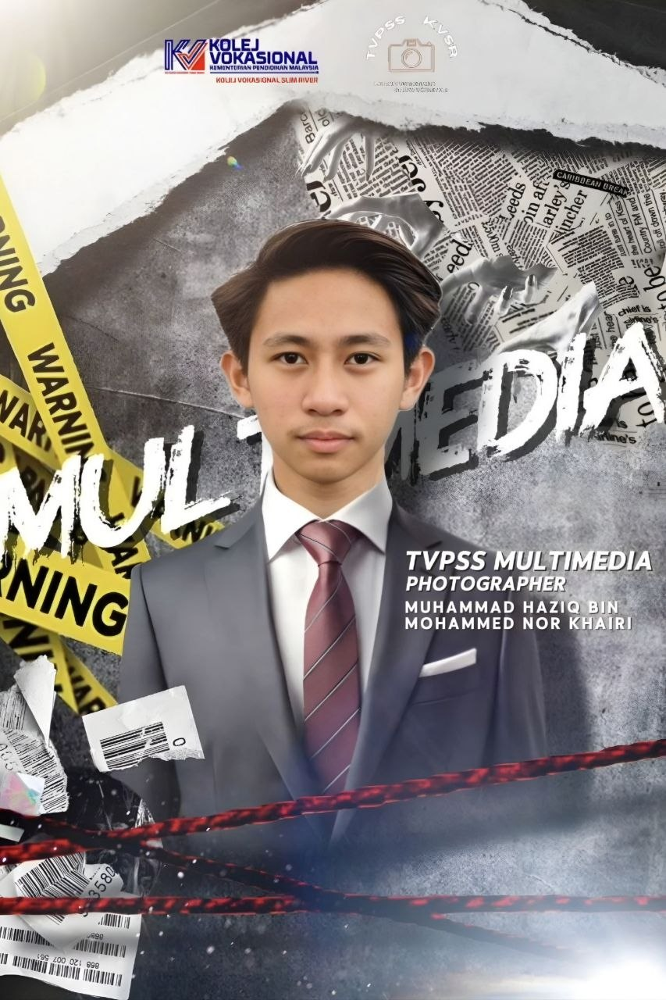

ORGANIZATION CHART

Nama Guru
Guru Penasihat
MUHAMMAD IRFAN DANIEL BIN MOHD ISA
Editor TVPSS

AQIL FIQRI BIN FAIZAL
Reporter

NUR AQILAH BINTI ABDUL RAZMI
Photographer

NUR IRDINA ZAHIRAH BINTI MOHD FARIZ
Reporter

NUR ARIANNA DANIA BINTI AHMAD KHAIRI
Photographer

NURQASEH BATRISYA BINTI ARDHI
Reporter

MUHAMMAD SUFYAN BIN MUHAMMAD SYAHRAN
Editor

BAKHTIAR HAKIMULLAH BIN BAKHTIAR SAMSUL KAMAL ARIFIN
Reporter

MUHAMMAD HAZIQ BIN MOHAMED NOR KHAIRI
Photographer